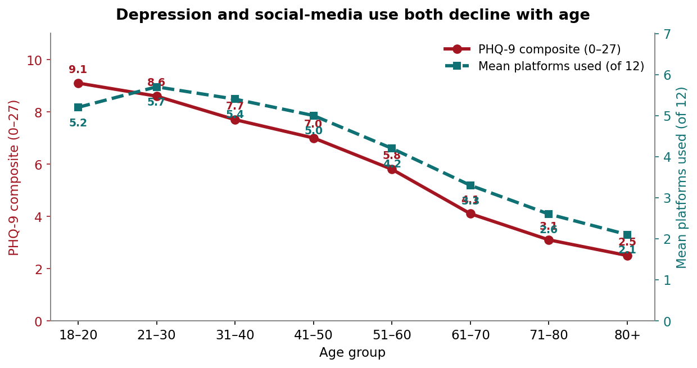
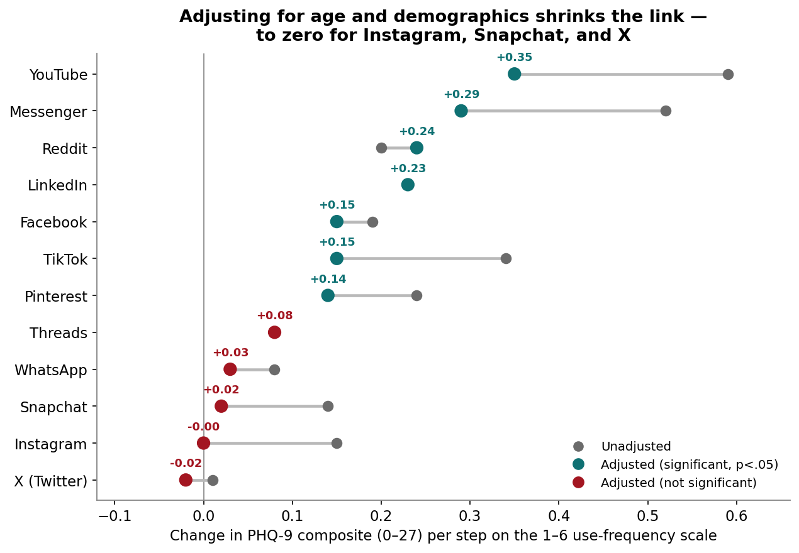
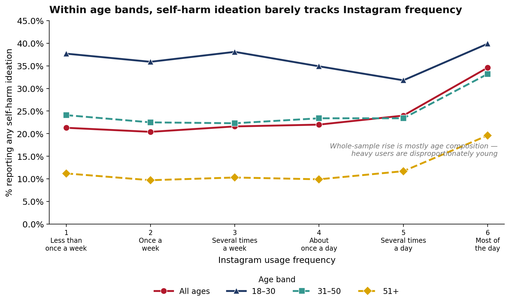
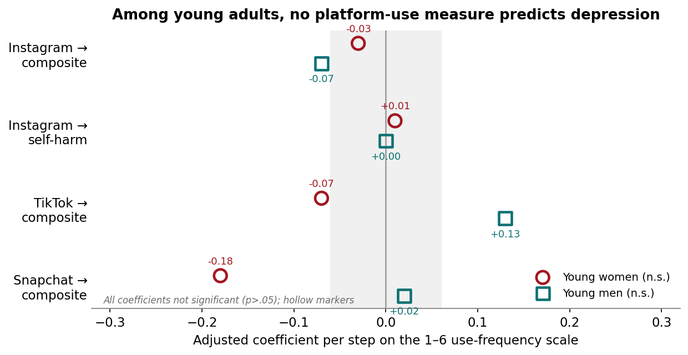
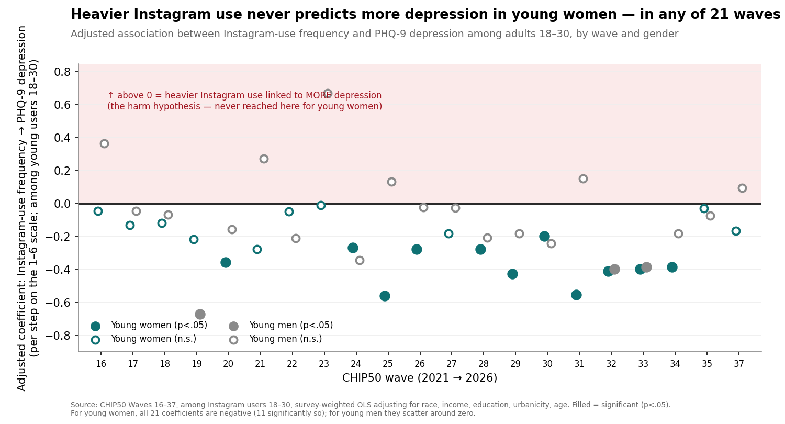

Social Media Use and Depression: Mostly a Story About Age
Among U.S. adults, the raw correlation between how much people use social media and how many depressive symptoms they report is largely explained by age. A focused look at young adults finds that intense use of Instagram — the platform of greatest public concern — shows no significant association with depression or self-harm for young women or young men once demographics are accounted for, a null that holds across all 21 waves of the panel measuring both.
Source:CHIP50 (Civic Health and Institutions Project / COVID States Project), Wave 35, fielded April 10–June 5, 2025 (wave unweighted n = 31,062). Depression is measured with the nine-item Patient Health Questionnaire (PHQ-9); social-media use is each platform's self-reported usage frequency, asked among that platform's users. Analyses are survey-weighted; associations are cross-sectional correlations, not causal effects. All figures are weighted estimates.
If this topic is affecting you personally, support is available — in the U.S. you can call or text 988 (the Suicide & Crisis Lifeline) at any time.
Cover Memo
This report asks a narrow, much-debated question: among users of a given platform, is more frequent use associated with more depressive symptoms — and does that association hold up for young adults, and specifically for young women using image-centered platforms like Instagram? It uses CHIP50 Wave 35 (fielded April 10–June 5, 2025), which carries the full nine-item PHQ-9 depression screener.
The prompt reads: “Over the last two weeks, how often have you been bothered by the following problems?” The outcome is the PHQ-9 composite: the nine standard depression items (phq9_1–phq9_9) — each answered on the four-point PHQ-9 frequency scale (“not at all,” “several days,” “more than half the days,” “nearly every day”), scored 0–3 per item under standard PHQ-9 scoring and summed to a 0–27 composite. Because the nine items are answered by essentially the same respondents, the coefficient on the 0–27 sum equals the sum of the nine item-level coefficients. The self-harm item — PHQ-9 item 9, “thoughts that you would be better off dead, or thoughts of hurting yourself in some way,” scored 0–3 — is examined separately. Usage frequency is a 1–6 self-report (1 = less than once a week to 6 = most of the day), modeled linearly and asked only of each platform's users, so every use-and-depression estimate is conditional on using the platform.
Models are survey-weighted (WLS) and adjust for age, gender, race/ethnicity, income, education, and urbanicity; standard errors are model-based rather than design-based, so reported significance is approximate. These are screening measures, not clinical diagnoses, and only population-level aggregates are reported.
Two cautions frame everything below. First, the data are cross-sectional: they can describe associations but cannot establish whether use affects mood, mood affects use, or a third factor drives both. Second, CHIP50 samples adults 18 and older; the sharpest public concern — and the Surgeon General's advisory — centers on adolescents aged 13–17, whom this survey does not cover. The youngest group here (18–30) is adjacent to, but not the same as, the teenagers at the heart of the debate.
Key Takeaways
- Depression falls steeply with age. The PHQ-9 composite drops from about 9 on the 0–27 scale among adults aged 18–20 to about 2.5 among those 80 and over — the strongest pattern in the data
- The raw use–depression link is mostly age. Because the young are both the most depressed and the heaviest social-media users, unadjusted comparisons conflate the two; after adjusting for age and demographics, the association disappears for Instagram, Snapchat, and X, and shrinks sharply for others.
- A modest association survives for some platforms. After full adjustment, more frequent use retains a positive link to depressive symptoms on YouTube (+0.35 per step on the 0–27 scale), Messenger (+0.29), Reddit (+0.24), LinkedIn (+0.23), TikTok (+0.15), Facebook (+0.15), and Pinterest (+0.14) — modest effects, a fraction of the age gradient.
- The self-harm item behaves differently. Heavier use carries a small but statistically reliable positive association with the single self-harm item on almost every platform (including Instagram and X, where the overall composite association is zero) — a pattern the composite average hides.
- Young women report more depression than young men — a composite of 9.3 vs. 8.1 among 18–30-year-olds — but the two are essentially equal on the self-harm item (0.59 vs. 0.62).
- Intense Instagram use shows no link here. Among young adults, the association between Instagram-use frequency and depression is not significant for young women (−0.03, p = .80) or young men (−0.07, p = .60), and the same holds for the self-harm item and for TikTok and Snapchat; what predicts young women's depression is lower education and income, not how much they use Instagram.
- The null replicates across 21 waves. Re-running the young-women model in every wave from 2021 to 2026, heavier Instagram use is never associated with significantly more depression — in all 21 waves the coefficient is negative (significant in 11), and never positive — the opposite of the harm hypothesis.
Introduction
Few empirical questions in public life are more contested than whether social media harms young people's mental health. The 2023 U.S. Surgeon General's advisory concluded that social media poses “meaningful risks” to youth mental health while acknowledging important gaps in the evidence, and it could not conclude that the platforms are “sufficiently safe” for children and adolescents.1 The scholarly picture is genuinely divided: some researchers argue the harms are large and rising — most prominently Jonathan Haidt in The Anxious Generation (2024)2 — while others find that the association between digital-technology use and adolescent well-being is very small once measured carefully, and caution against strong causal claims.3 Concern has focused especially on adolescent girls and image-centered platforms such as Instagram, where body-image pressures are thought to be sharpest.
CHIP50 cannot resolve this debate, and it does not sample the teenagers at its center. But its large adult panel, carrying the full PHQ-9 screener alongside platform-by-platform usage measures, allows a clear test of a related question: among adults — and among young adults specifically — is heavier use of a platform associated with more depressive symptoms, and is that association concentrated among young women on Instagram? This report answers that question descriptively and with demographic controls, and is careful throughout to treat the results as correlations, not effects.
Depression Declines Steeply With Age
The strongest pattern in the data involves no platform at all. The PHQ-9 composite declines monotonically with age, from a weighted mean of about 9 on the 0–27 scale among adults 18–20 to about 2.5 among those 80 and over. And — as the same figure shows — social-media use runs in the opposite direction: the young use the most platforms and use them most intensely.

Table 1. Depression (PHQ-9 composite, 0–27) and social-media use intensity, by age (Wave 35, weighted).
| Age group | PHQ-9 composite (0–27) | Mean platforms used (of 12) | Avg. use intensity (1–6) |
|---|---|---|---|
| 18–20 | 9.1 | 5.2 | 4.0 |
| 21–30 | 8.6 | 5.7 | 4.2 |
| 31–40 | 7.7 | 5.4 | 4.2 |
| 41–50 | 7.0 | 5.0 | 4.0 |
| 51–60 | 5.8 | 4.2 | 3.8 |
| 61–70 | 4.1 | 3.3 | 3.7 |
| 71–80 | 3.1 | 2.6 | 3.5 |
| 80+ | 2.5 | 2.1 | 3.4 |
PHQ-9 items scored 0–3 and summed across nine items (0–27). “Mean platforms used” is the expected number of the 12 tracked platforms a person uses (sum of weighted adoption rates). “Avg. use intensity” is the mean usage frequency (1 = less than once a week to 6 = most of the day) across the platforms each age group uses, weighted by adoption. Rows may not move perfectly monotonically due to rounding.
This gradient is central to everything that follows. The young are both the most depressed and, by both measures in Table 1, the heaviest users — a person aged 21–30 uses on average about 5.7 of the 12 tracked platforms, and uses them more intensely, versus about 2 platforms for the oldest adults. Any unadjusted comparison of heavier versus lighter users therefore mixes use with age. Separating the two requires holding age — and the other things that travel with both use and mood — constant.
Adjusting for Demographics Removes Most of the Use–Depression Link
For each platform we regress the PHQ-9 composite on the platform's usage frequency, first alone and then adjusting for age, gender, race, income, education, and urbanicity. The coefficient is the change in the 0–27 composite per one-step increase on the six-point (less than once a week→most of the day) frequency scale.
For several platforms the raw association does not survive adjustment. Instagram is the clearest case: its unadjusted association is positive (+0.15) but falls to essentially zero (−0.00, not significant) once demographics are controlled. Snapchat behaves the same way (+0.14 → +0.02, n.s.), as does X/Twitter (already near zero). Almost all of that shrinkage is the age adjustment: adding the socioeconomic controls on top of age changes the estimates only marginally, so the associations are not an artifact of income or education. These are the platforms whose younger user base carried the raw correlation.
A Modest Association Remains for Some Platforms
After full adjustment, a positive composite association persists on several platforms, and is statistically significant on each. YouTube (+0.35), Messenger (+0.29), Reddit (+0.24), and LinkedIn (+0.23) retain the largest adjusted associations; TikTok (+0.15), Facebook (+0.15), and Pinterest (+0.14) retain smaller but significant ones; and Threads, WhatsApp, Snapchat, Instagram, and X are not significantly associated after adjustment.

These associations vary between zero and substantively moderate and statistically significant. YouTube's coefficient has the largest association, where the coefficient of +0.35 implies less than a two-point difference on the 0–27 composite between the lightest and heaviest users — a fraction of the roughly 6.6-point gap between the youngest and oldest adults (Figure 1).
The Self-Harm Item Behaves Differently
The composite treats all nine symptoms alike, but they need not move together. Isolated and fitted with the same full adjustment, the self-harm item — item 9 — is positively and significantly associated with heavier use on almost every platform, including Instagram (+0.021), X (+0.030), WhatsApp (+0.030), and Threads (+0.043), platforms that show no adjusted association with the overall composite. Only Snapchat is non-significant on this item. Among users of the same age, gender, race, income, education, and urbanicity, heavier use of these platforms is tied to slightly more frequent thoughts of self-harm even where it is unrelated to total depressive symptoms.
The descriptive picture is consistent with this, and pooling every comparable wave (16–37) gives it real statistical weight — roughly 216,000 respondents. Across the full adult sample, the share of Instagram users reporting any thoughts of self-harm rises from about 21% among the least-frequent users to about 34% among those who use it most of the day (Figure 3, “All ages”). But almost all of that climb is who uses Instagram heavily rather than the use itself. Split the same respondents into age bands and the gradient inside each band largely flattens. Among 18–30-year-olds — the group of greatest concern — the share barely tracks frequency at all: about 37% at the lightest use, 40% at the heaviest, and slightly lower in between.

One residual pattern does survive the age split: at the very heaviest level — using Instagram most of the day — the share ticks up within the two older bands (31–50: 23% → 33%; 51+: about 11% → 20%), even while it is flat across the lighter five levels. A fully adjusted survey-weighted logistic regression of any self-harm ideation on Instagram frequency plus the full demographic set (Wave 35) puts a number on what remains: each step up the frequency scale is associated with about 6% higher odds of any ideation (odds ratio 1.06 per step, p < .001) — small, statistically reliable, and concentrated at the heaviest-use end rather than spread evenly across the scale.
Two cautions govern how to read these self-harm results. First, the per-platform slopes do not add up across platforms: entered jointly into one model, the shared “general heavy use” signal is partitioned once rather than counted many times, and only Reddit (+0.08, p < .001) retains an independent positive association — Instagram, Facebook, YouTube, TikTok, X, and Snapchat all fall to essentially zero. Second, the baseline is not rare: about one in five adults (roughly 20–22% overall, higher among young adults) report at least some such thoughts in the prior two weeks, so the measure has ample variation to model.
A Focus on Young Adults
Because depression is concentrated among the young, and because the loudest concerns are about young people, it is worth examining the 18–30 group on its own. Young adults are the most depressed age band in the survey (composite ≈ 9), and within it a familiar gender gap appears: young women report more depressive symptoms than young men — a composite of 9.3 versus 8.1. On the self-harm item, however, the two are essentially equal (young women 0.59, young men 0.62 on the 0–3 item), so the “gender paradox” sometimes seen in the full adult sample does not appear among young adults here.
Table 2. Depression among young adults (18–30), by gender (Wave 35).
| Measure | Young women | Young men |
|---|---|---|
| PHQ-9 composite (0–27) | 9.3 | 8.1 |
| Self-harm item (0–3) | 0.59 | 0.62 |
| Unweighted n | ~3,330 | ~2,340 |
The question we turn to now is whether higher female level of depression is correlated with social-media use — and specifically to intense use of Instagram.
Young Women, Instagram, and Intensity of Use
Among young adults, the association between how intensively a person uses Instagram and how many depressive symptoms they report is not statistically significant for either gender — and, if anything, slightly negative. For young women the adjusted coefficient is −0.03 (p = .80, n = 1,950); for young men, −0.07 (p = .60, n = 1,368). The self-harm item shows the same null: young women +0.014 (p = .33), young men +0.001 (p = .95). There is no evidence here that the Instagram–depression gradient is steeper for young women, because there is essentially no gradient for either sex.

The descriptive picture agrees. Among young women who use Instagram, average depression is no higher for the heaviest users than the lightest — a composite of about 10.0 among the most frequent users versus 10.4 among the least (the curve dips lower in between). The same flatness holds for young men. And the pattern is not special to Instagram: within young adults, usage frequency on TikTok and Snapchat is likewise unrelated to depression for both genders after adjustment.
What does predict depression among young women in these models is not their apps but their circumstances: lower education (those with a high-school education or less score 1.7–2.5 points higher on the composite than college graduates) and lower income both carry sizable, significant associations. The elevated depression of young women, in other words, tracks socioeconomic position far more than Instagram use. In this large sample of young adults, how much someone uses Instagram is not associated with how depressed they are, for young women or young men.
The Null Holds Across Twenty-One Waves
A single survey can produce a null by chance, so the Wave 35 result is only convincing if it repeats. It does. We re-ran the same young-women model — Instagram-use frequency predicting the PHQ-9 composite among women aged 18–30, adjusted for the full demographic set — in every CHIP50 wave that carries both measures on a comparable scale: 21 waves spanning 2021 to 2026. The pattern is not merely a repeated null; it is a consistent one that points the opposite way from the harm hypothesis.

In none of the 21 waves is heavier Instagram use associated with significantly more depression among young women. In every wave the coefficient is negative — heavier users report the same or slightly fewer symptoms — and in 11 of the 21 that negative association is statistically significant. The coefficients range from −0.01 to −0.56 on the 0–27 scale; not one crosses into positive territory. Young men show the same absence of a positive association (15 of 21 negative, 3 significantly so, none positive-significant). The self-harm item tells the same story: across the 21 waves the Instagram–self-harm coefficient for young women is tiny and its four significant results split two positive and two negative — the signature of noise across many tests, not a signal.
Two features make this more than a repeated null. First, the consistency: 21 independent samples all pointing the same, non-harmful direction is far stronger evidence than any single wave. Second, the mild negative slope suggests that, if anything, the young women who use Instagram most heavily report slightly fewer depressive symptoms than those who use it least — the reverse of the popular narrative. That negative sign is itself cross-sectional and easy to misread (it could reflect more-depressed young women withdrawing from the platform rather than any protective effect), so it should not be over-interpreted. But the central point is that intensity of Instagram use does not track higher depression in young women, in any wave measured.
Extending the same 21-wave test to the other two youth-heavy platforms gives the same bottom line — no replicable positive association — though the shape differs. Where Instagram's coefficient is negative in every wave, TikTok's and Snapchat's scatter symmetrically around zero, reaching significance in a handful of waves split between positive and negative — the fingerprint of chance across many tests (Appendix Table A6). Across all three platforms and both genders, not one shows heavier use predicting more depression in a way that repeats from wave to wave.
Who Reports the Most
Because the models adjust for a full demographic set, it is worth reporting what those covariates themselves show. Age dominates: symptoms fall steeply and monotonically from the youngest adults to the oldest. Gender: women report more depressive symptoms than men overall (in the full sample, men score about 0.6 points lower on the composite, holding other factors constant). Income is protective, with a steady gradient — the highest-income households score well below the lowest even after everything else is held constant. Education: symptoms are highest among the least educated. Urbanicity matters little for the composite. Race: adjusted for other factors, White and Hispanic adults report more symptoms than Black adults, with Asian American adults indistinguishable from the reference — a pattern in which raw and adjusted comparisons can differ, so it should be read as a controlled contrast rather than a simple group ranking. These demographic associations are large and consistent relative to the modest platform effects — a reminder that who someone is predicts their reported symptoms far more than which apps they use.
Comparative Context
This report's central negative finding sits squarely within the scientific debate it addresses. The 2023 Surgeon General's advisory took a precautionary stance — meaningful risks, incomplete evidence — and focused on adolescents 13–17.1 The research on that age group is contested: work by Amy Orben, Andrew Przybylski, and colleagues has repeatedly found that the association between digital-technology use and adolescent well-being is very small — on the order of a fraction of a percent of variance explained — and comparable in size to associations with wearing glasses or eating potatoes,3 while Haidt and collaborators argue those methods understate real harm.2 CHIP50's young-adult null is consistent with the “small-to-null association” side of that literature, but it is important not to overread it: these are adults, not the teenage girls at the center of the concern; the measure is frequency of use, not the image-comparison or cyberbullying content that specific harms are attributed to; and a flat cross-sectional association is compatible with real within-person effects that a single snapshot cannot detect. The most defensible reading is that, for U.S. young adults in 2025, sheer intensity of Instagram use is not a marker of depression — which narrows, without closing, the space in which platform-specific harms to this age group could operate.
Conclusion
Measured on the full PHQ-9 scale and adjusted for a complete demographic set, the correlation between social-media use and depressive symptoms among U.S. adults is, for the most part, a reflection of age and the circumstances that accompany it. A handful of platforms retain modest positive associations after adjustment; Instagram, Snapchat, and X do not; and the single self-harm item carries a small positive association almost everywhere. Turning to the group of greatest concern, young adults, and the platform of greatest concern, Instagram, the data are clear in the negative: intensity of use is not associated with depression or self-harm, for young women or young men, and young women's higher distress tracks their education and income rather than their screens. Because the data are cross-sectional and adult, this narrows rather than settles the question — but it is a specific, well-powered piece of evidence against the simplest version of the “Instagram is making young women depressed” claim, at least for those aged 18 and over.
Methods
Data. CHIP50 (Civic Health and Institutions Project / COVID States Project), Wave 35, fielded April 10–June 5, 2025 (wave unweighted n = 31,062). All estimates are survey-weighted (WLS) to U.S. adults on race/ethnicity, age, gender, education, 2020 vote, and urban/rural residence; unweighted counts are reliability indicators only.
Measures. Depression is the PHQ-9 composite: items phq9_1–phq9_9, each scored 0–3 under standard PHQ-9 scoring (0 = “not at all” to 3 = “nearly every day”) and summed to a 0–27 scale. The panel's phq9_10/phq9_11 (anxiety), phq9_12 (a bogus-symptom validity item), and phq9_13 (an attention check) are not PHQ-9 items and are excluded. The self-harm item is PHQ-9 item 9 (scored 0–3). Usage frequency is each platform's 1–6 self-report (1 = less than once a week to 6 = most of the day), asked among users and modeled linearly, so per-step coefficients approximate a scale whose steps are not evenly spaced.
Analysis. Each platform's frequency is regressed on the PHQ-9 composite (and on the self-harm item), unadjusted and adjusted for age, gender, race, income, education, and urbanicity. The young-adult analysis restricts to ages 18–30 and, for the Instagram/TikTok/Snapchat tests, is estimated separately for women and men. Standard errors are model-based, not design-based, so significance is approximate; with many platform-by-outcome tests, individual borderline results should be read with multiple-comparison risk in mind. Caveats that bound interpretation: (1) the data are cross-sectional and cannot establish direction or rule out common causes; (2) CHIP50 samples adults 18+, not the adolescents 13–17 at the center of the policy debate; (3) frequency of use captures neither the content nor the subjective experience of use; (4) the self-harm item is skewed toward its lowest category; (5) these are screening measures, not diagnoses. The young-women/Instagram model was re-estimated in all 21 waves that carry both PHQ-9 and usage frequency on a comparable scale (Waves 16–37, 2021–2026); results are reported wave by wave rather than pooled, since the panel re-interviews respondents and pooling would understate standard errors.
Appendix — Data Tables and Regression
Table A1. PHQ-9 composite (0–27) by age (Wave 35, weighted).
| Age group | Composite mean (0–27) | Unweighted n |
|---|---|---|
| 18–20 | 9.1 | 932 |
| 21–30 | 8.6 | 4,739 |
| 31–40 | 7.7 | 6,252 |
| 41–50 | 7.0 | 5,769 |
| 51–60 | 5.8 | 4,841 |
| 61–70 | 4.1 | 4,859 |
| 71–80 | 3.1 | 3,088 |
| 80+ | 2.5 | 582 |
Table A2. Full platform table — usage frequency and PHQ-9 (Wave 35, per step on the 1–6 scale).
| Platform | Unadj. composite | Adj. composite | Adj. self-harm | n |
|---|---|---|---|---|
| YouTube | +0.586 | +0.353*** | +0.034*** | 18,169 |
| Messenger | +0.517 | +0.286*** | +0.034*** | 14,855 |
| +0.199 | +0.240*** | +0.045*** | 6,321 | |
| +0.234 | +0.231*** | +0.062*** | 6,303 | |
| TikTok | +0.336 | +0.151** | +0.017** | 10,003 |
| +0.188 | +0.149*** | +0.022*** | 20,027 | |
| +0.240 | +0.136** | +0.052*** | 7,568 | |
| Threads | +0.075 | +0.075 n.s. | +0.043*** | 2,318 |
| +0.075 | +0.028 n.s. | +0.030*** | 4,735 | |
| Snapchat | +0.138 | +0.018 n.s. | +0.010 n.s. | 6,340 |
| +0.147 | −0.003 n.s. | +0.021*** | 12,664 | |
| X (Twitter) | +0.009 | −0.019 n.s. | +0.030*** | 7,064 |
*** p<.001, ** p<.01, n.s. = not significant. Adjusted models control for age, gender, race, income, education, urbanicity. Among each platform's users.
Table A3. Young adults (18–30): usage frequency and depression, by gender (adjusted coefficient per step, Wave 35).
| Platform / outcome | Young women (coef, p, n) | Young men (coef, p, n) |
|---|---|---|
| Instagram → composite | −0.028 (p=.80, n=1,950) | −0.073 (p=.60, n=1,368) |
| Instagram → self-harm | +0.014 (p=.33, n=1,970) | +0.001 (p=.95, n=1,386) |
| TikTok → composite | −0.067 (p=.57, n=1,905) | +0.134 (p=.38, n=1,089) |
| Snapchat → composite | −0.175 (p=.15, n=1,508) | +0.017 (p=.92, n=881) |
Adjusted for race, income, education, urbanicity, and age (within 18–30). Among young users of each platform.
Table A4. Instagram-intensity gradient among young adults (18–30): PHQ-9 composite mean by usage-frequency level (weighted).
| Instagram frequency | Young women | Young men |
|---|---|---|
| 1 (less than once a week) | 10.4 | 9.3 |
| 6 (most of the day) | 10.0 | 8.3 |
| Change (highest − lowest) | −0.4 | −1.0 |
Composite (0–27) means among Instagram users; the curves are non-monotonic and essentially flat (young women dip to ~8.6 at level 5; young men to ~7.5). Small per-cell samples at the extremes (n ≈ 68–486).
Table A5. Instagram-use frequency and depression among young adults (18–30), by wave — adjusted coefficient per step on the 1–6 frequency scale.
| Wave | Young women → composite | Young men → composite | Young women → self-harm |
|---|---|---|---|
| 16 | −0.045 | +0.365 | +0.021 |
| 17 | −0.131 | −0.045 | +0.034* |
| 18 | −0.118 | −0.067 | +0.020 |
| 19 | −0.215 | −0.669* | +0.005 |
| 20 | −0.357* | −0.155 | −0.022 |
| 21 | −0.277 | +0.273 | +0.001 |
| 22 | −0.047 | −0.208 | +0.003 |
| 23 | −0.008 | +0.670 | +0.055* |
| 24 | −0.266* | −0.343 | −0.002 |
| 25 | −0.559* | +0.133 | −0.022 |
| 26 | −0.277* | −0.023 | −0.020 |
| 27 | −0.182 | −0.027 | +0.001 |
| 28 | −0.277* | −0.208 | +0.006 |
| 29 | −0.426* | −0.182 | −0.038* |
| 30 | −0.196* | −0.240 | +0.001 |
| 31 | −0.552* | +0.154 | −0.040* |
| 32 | −0.411* | −0.398* | −0.020 |
| 33 | −0.398* | −0.386* | −0.027 |
| 34 | −0.385* | −0.181 | −0.010 |
| 35 | −0.028 | −0.073 | +0.014 |
| 37 | −0.166 | +0.094 | +0.021 |
* p < .05. Composite is the 0–27 PHQ-9 sum; self-harm is item 9 (0–3). Adjusted for race, income, education, urbanicity, age. Among young Instagram users. Of 21 waves, the young-women composite coefficient is negative in all 21 (significant in 11) and positive-significant in none.
Table A6. TikTok and Snapchat: usage frequency and PHQ-9 composite among young adults (18–30), by wave — adjusted coefficient per step on the 1–6 frequency scale.
| Wave | TikTok women | TikTok men | Snapchat women | Snapchat men |
|---|---|---|---|---|
| 16 | +0.189 | +0.154 | +0.198 | −0.111 |
| 17 | +0.390* | −0.565* | +0.010 | +0.021 |
| 18 | +0.107 | +0.145 | −0.088 | −0.116 |
| 19 | +0.159 | −0.141 | −0.100 | −0.593* |
| 20 | −0.153 | +0.196 | −0.047 | +0.063 |
| 21 | +0.035 | −0.382 | +0.163 | −0.917 |
| 22 | −0.030 | +0.008 | −0.073 | +0.088 |
| 23 | +0.500* | −0.709 | −0.089 | −0.666 |
| 24 | −0.335* | −0.447* | −0.009 | +0.034 |
| 25 | +0.067 | +0.382 | −0.245* | +0.203 |
| 26 | +0.109 | −0.190 | −0.098 | −0.340 |
| 27 | +0.174 | +0.511* | −0.180 | +0.271 |
| 28 | −0.053 | +0.274 | +0.063 | −0.115 |
| 29 | +0.031 | +0.130 | −0.293* | +0.046 |
| 30 | +0.041 | +0.072 | +0.185* | −0.213 |
| 31 | −0.038 | +0.127 | −0.010 | +0.111 |
| 32 | +0.202 | −0.498* | −0.120 | +0.210 |
| 33 | −0.004 | −0.245 | −0.099 | +0.113 |
| 34 | −0.216* | −0.212 | −0.184 | −0.041 |
| 35 | −0.067 | +0.134 | −0.175 | +0.017 |
| 37 | −0.001 | +0.108 | −0.063 | +0.240 |
* p < .05. Adjusted for race, income, education, urbanicity, age. Among young users of each platform. Of 21 waves, positive-significant results number 2 (TikTok women), 1 (TikTok men), 1 (Snapchat women), 0 (Snapchat men) — offset by a similar count of negative-significant results, consistent with noise around a true effect of zero.
Notes and sources
- Office of the U.S. Surgeon General, “Social Media and Youth Mental Health: The U.S. Surgeon General's Advisory,” 2023. The advisory concluded that social media poses “meaningful risks of harm” to youth mental health while noting the evidence is not yet complete, and could not conclude the platforms are “sufficiently safe.” It focuses on adolescents aged 13–17. https://www.hhs.gov/surgeongeneral/reports-and-publications/youth-mental-health/social-media/index.html
- Jonathan Haidt, The Anxious Generation: How the Great Rewiring of Childhood Is Causing an Epidemic of Mental Illness (Penguin Press, 2024), which argues that a shift to phone- and social-media-based childhood is a major cause of rising adolescent mental illness, especially among girls.
- Amy Orben and Andrew K. Przybylski, “The association between adolescent well-being and digital technology use,” Nature Human Behaviour 3 (2019): 173–182, which found the association between digital-technology use and adolescent well-being to be small (explaining well under 1% of variance) and comparable in magnitude to everyday activities. https://www.nature.com/articles/s41562-019-0506-1
CHIP50 Wave 35 (Civic Health and Institutions Project / COVID States Project), fielded April 10–June 5, 2025. All figures are weighted estimates; associations are cross-sectional, not causal.